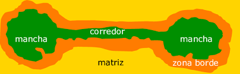

Semana 2: O Modelo Mancha-Corredor-Matriz e a Heterogeneidade
Ecologia da Paisagem - Bacharelado em Ciências Biológicas (UFPE)
Plano de Aula: Semana 2
Objetivo Central: Capacitar o aluno a identificar e descrever a estrutura da paisagem através dos elementos do modelo clássico (PCM) e compreender as origens e consequências da heterogeneidade espacial para diferentes organismos.
Slides desta aula
Tela cheia CLIQUE AQUI e depois pressione ‘f’
Resumos dos Principais Pontos
1. O Modelo Mancha-Corredor-Matriz (PCM)
Este é o modelo mais utilizado para representar a estrutura da paisagem, permitindo que ela seja medida, comparada e monitorada ao longo do tempo 1, .
Mancha (Patch): Uma área quase homogênea que difere do seu entorno. Seu tamanho, forma e origem (tipo de distúrbio) determinam a estabilidade e a dinâmica das espécies que nela residem 1, 2.
Corredor (Corridor): Uma faixa linear de vegetação ou habitat que se distingue da matriz e conecta duas ou mais manchas, facilitando fluxos biológicos 1, 2.
Matriz (Matrix): O elemento espacialmente mais extenso e inter-relacionado. É o componente que controla a dinâmica da paisagem, influenciando fluxos de nutrientes, energia e movimento de espécies 2.
Borda (Edge): É o ecótono entre hábitat e não hábitat e por sua natureza, é considerado um háitat de “menor qualidade” em comparação à mancha e “melhor” que a matriz 2.


2. O Conceito de Heterogeneidade
A paisagem é, por definição, um mosaico heterogêneo 1. Essa heterogeneidade não é estática; ela varia conforme o tempo e o observador 1, .
Principais Fontes de Heterogeneidade:
- Ambiente Físico: Variações geológicas, topográficas (relevo) e tipos de solo que criam nichos diferenciados 2.

- Regime de Distúrbios Naturais: Eventos como fogo, tempestades e pragas que “quebram” a continuidade da vegetação 1, 2.

- Perturbações Antrópicas: Ação humana através do desmatamento, construção de estradas e agricultura, que fragmentam habitats naturais e inserem novos elementos no mosaico.

3. A Paisagem sob a Lente do Organismo
A distinção entre o que é “mancha” e o que é “matriz” depende da espécie estudada. O que para um humano é uma matriz de pastagem intransponível, para um tamanduá pode ser um habitat preferencial . Portanto, o manejo da paisagem deve considerar a conectividade funcional (capacidade real de movimento) e não apenas a disposição física dos elementos 2.
###4 Conectividade Funcional
A conectividade funcional refere-se à capacidade real de movimento dos organismos através dos elementos da paisagem. Diferente da conectividade estrutural, que foca apenas na disposição física e espacial das manchas, a funcional considera a interação ecológica entre a espécie e a páisagem
Essa conectividade depende de fatores específicos do organismo, como sua capacidade de dispersão, escala de percepção e o nível de permeabilidade da matriz para aquele grupo. Manter fluxos funcionais é vital para garantir o fluxo gênico e mitigar os efeitos do isolamento, prevenindo a extinção de populações sensíveis em paisagens fragmentadas.
 Ilustração dos cinco tipos gerais de métricas e abordagens de conectividade utilizados na literatura em ecossistemas urbanos. (A) A conectividade estrutural conceitualiza manchas discretas em uma matriz uniforme de não-habitat e tipicamente mede distâncias euclidianas entre manchas de habitat natural ou a quantidade de habitat dentro de uma zona de amortecimento (buffer) ao redor de uma mancha focal. Métricas estruturais não tentam capturar variações específicas de espécies ou processos. (B) A conectividade de rede em grafos representa as manchas como nós e as ligações entre elas (ex: lacunas transponíveis ou corredores) como arestas em uma rede, assumindo que o movimento pode ocorrer apenas entre manchas ligadas por essas arestas. Métricas baseadas em grafos podem incorporar informações específicas das espécies, como o uso da distância de dispersão para determinar quais pares de manchas estão vinculados. (C) As métricas de conectividade potencial incorporam explicitamente informações específicas das espécies, como distâncias presumidas de movimento ou dispersão, para ponderar as conexões possíveis entre manchas para os táxons focais. (D) A conectividade funcional conceitualiza paisagens heterogêneas com custos ou resistências específicos para as espécies de acordo com os tipos de cobertura, baseando-se no quanto uma célula de raster daquele tipo impede o movimento ou aumenta o risco de mortalidade. (E) A conectividade real pode ser estimada a partir do movimento empírico de indivíduos, do sucesso de dispersão ou do fluxo gênico registrado entre populações. A validação dos outros quatro tipos de conectividade é melhor realizada utilizando dados de conectividade real.
Ilustração dos cinco tipos gerais de métricas e abordagens de conectividade utilizados na literatura em ecossistemas urbanos. (A) A conectividade estrutural conceitualiza manchas discretas em uma matriz uniforme de não-habitat e tipicamente mede distâncias euclidianas entre manchas de habitat natural ou a quantidade de habitat dentro de uma zona de amortecimento (buffer) ao redor de uma mancha focal. Métricas estruturais não tentam capturar variações específicas de espécies ou processos. (B) A conectividade de rede em grafos representa as manchas como nós e as ligações entre elas (ex: lacunas transponíveis ou corredores) como arestas em uma rede, assumindo que o movimento pode ocorrer apenas entre manchas ligadas por essas arestas. Métricas baseadas em grafos podem incorporar informações específicas das espécies, como o uso da distância de dispersão para determinar quais pares de manchas estão vinculados. (C) As métricas de conectividade potencial incorporam explicitamente informações específicas das espécies, como distâncias presumidas de movimento ou dispersão, para ponderar as conexões possíveis entre manchas para os táxons focais. (D) A conectividade funcional conceitualiza paisagens heterogêneas com custos ou resistências específicos para as espécies de acordo com os tipos de cobertura, baseando-se no quanto uma célula de raster daquele tipo impede o movimento ou aumenta o risco de mortalidade. (E) A conectividade real pode ser estimada a partir do movimento empírico de indivíduos, do sucesso de dispersão ou do fluxo gênico registrado entre populações. A validação dos outros quatro tipos de conectividade é melhor realizada utilizando dados de conectividade real.
Referências Bibliográficas
1. Metzger, J. P. (2001). O que é ecologia de paisagens? Biota Neotropica.
2. Rocha, C. H., et al. (1997). Ecologia da paisagem e manejo sustentável dos recursos naturais. Geografia.